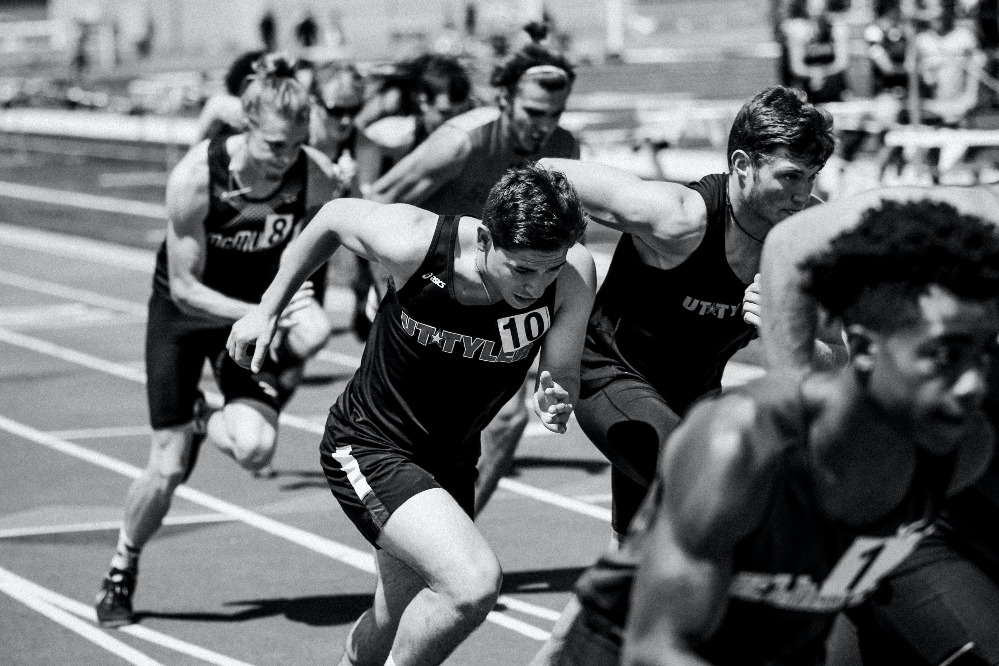
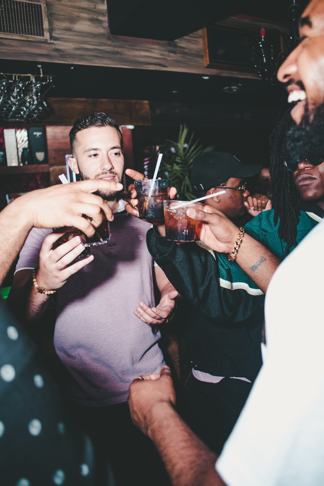

About Us
The Bitty Boys Club, founded by Arthur Degraft and Nigel Zay in 2020, is a globally recognized club, lifestyle and brand, whose blend of hardwork and the community empowerment has influenced countless number of people and cultures around the world. As the go-to brand when it comes to community empowerment, the BBC has built a universe from the foundation of deprived kids to form ICECREAM, Bee Line and Bitty Community Club. The brands’ DNA are fueled by Degraft’s aspirational motto and the clubs mantra. "We get lifted by uplifting others".
Events

The Guadolompoor Race

The Blocc Concert

Uncle Rokus community cook-Out